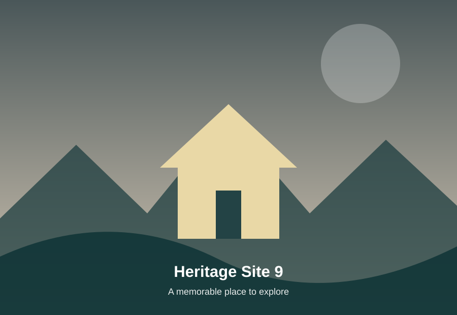

Historic
Plan your stay
← All places
About Vellore Fort
Vellore Fort is a prominent historic fortification in the heart of Vellore. Its massive granite construction, broad moat and surviving structures provide a clear view of the military architecture of its period.
What to look for: Granite walls, moat, Jalakanteswarar Temple.
Location
Vellore
Vellore
Heritage
Vellore • Historic fort
Vellore • Historic fort
Best for
History & architecture
History & architecture
Suggested visit
2–3 hours
2–3 hours